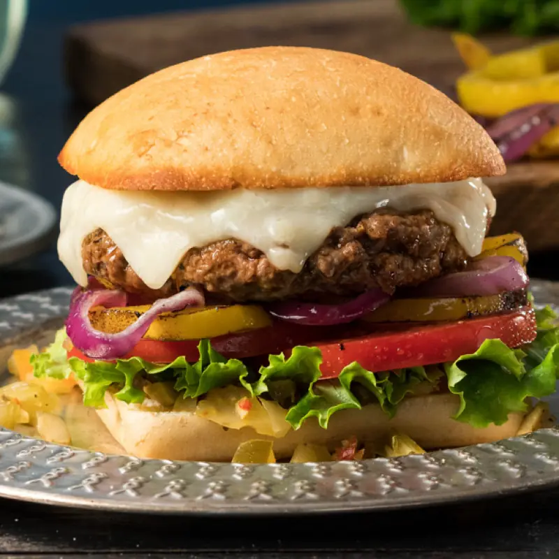

Italian Burgers with Kalamata Olive Relish
- Serves4
- Ingredients13
- Steps4

Ingredients
Kalamata Olive Relish
- 1 cup kalamata olives, pitted
- 1 cup mayonnaise
- Lemon juice
- Kosher salt amd freshly ground black pepper
Burgers
- 1 lbs mild Italian sausage, casings removed
- 1/2 lbs ground beef
- 3 garlic cloves, minced
- 2 teaspoons dried Italian seasoning
- 1 red onion, thickly sliced
- 4 slices provolone cheese
- 4 brioche buns, sliced in half
- 2 vine-ripened tomatoes, sliced
- Baby arugula
Directions
- Make the olive relish: In a blender or food processor, combine the olives and mayonnaise and blend until smooth. Transfer to a small bowl and season with lemon juice, salt, and pepper.
- Make the burgers: In a large bowl, combine the sausage, ground beef, garlic, and Italian seasoning. Form 4 patties that are slightly wider than the buns.
- Heat a grill or a grill pan over medium heat. Sear the patties, flipping once, until cooked through to your preference, about 4 minutes per side for medium, or an internal temperature of 130ºF. While the burgers cook, sear the red onion as well, if you like grilled onions, 1 to 2 minutes per side. Just before the burgers are finished cooking, place the sliced sheese on top and let melt. Toast the buns.
- To serve, spread olive relish on one side of a toasted bun. Add the meat, grilled onion, tomato, arugula, and finally the top bun. Repeat for the remaining burgers.
Recipe credit: the MasterChef Junior Cookbook by Christina Tosi